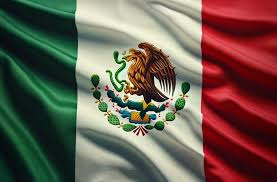

En este artículo descubriremos por qué la gastronomía mexicana es mucho más que una simple comida; es una expresión cultural que ha conquistado el paladar de aquellos que buscan una experiencia culinaria auténtica y enriquecedora. ¡Sigue leyendo!

VARIEDAD REGIONAL. Una de las características más destacadas de la gastronomía mexicana es su diversidad regional. Cada estado de México tiene su propia identidad culinaria, basada en ingredientes locales y tradiciones históricas. Desde los sabores intensos del sur, como los moles de Oaxaca, hasta los platos picantes del norte, como los cortes de carne asada en Sonora, la cocina mexicana es un mosaico de sabores que reflejan la riqueza geográfica y cultural del país.
MAÍZ: EL CORAZÓN DE LA COCINA MEXICANA.